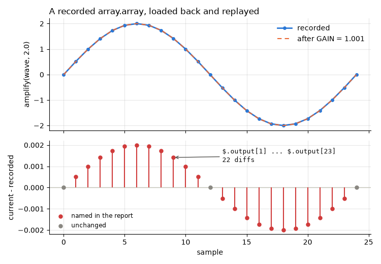

Note
Go to the end to download the full example code.
default_registry : adding a serializer for a leaf type¶
to_json_tree, from_json_tree : custom classes stored by their attributes showed that a
class of your own needs nothing: it is recorded by its attributes. A Serializer is
for the values that have no attributes to record - leaf values. The built-in ones
cover numpy arrays and scalars, polars and pandas frames, datetimes, Decimal, paths,
bytes and the like. What is left is mostly C types from compiled extensions, whose state
lives below Python attributes.
This page adds one, stdlib array.array, in two parts that are independent of each
other: a Serializer to record it, and a Comparator to describe how two of them
differ.
Setup: where records go¶
The code under test reads its store from the REGRESSION_RECORDS_STORE environment
variable when it is imported, so the variable is set first
(record_func : recording a first call says why).
import os
import tempfile
from pathlib import Path
# In a project: REGRESSION_RECORDS_STORE=tests/regression_data in a .env file, loaded
# with python-dotenv's load_dotenv(). Here: a fresh temporary directory, empty each run.
STORE = Path(tempfile.mkdtemp(prefix="regression-records-"))
os.environ["REGRESSION_RECORDS_STORE"] = str(STORE)
print("store:", STORE)
store: /tmp/regression-records-7v4f91jq
Setup: the code under test¶
Replay imports a recorded function by module and name, so the code under test lives in
a module, signals, imported from regression_records._examples - support code
that ships with the package so that a page can import real code rather than define it
in a cell (record_func : recording a first call says more). In
your project, this is your own package. Its source, printed below:
Both functions take and return array.array values. The module records into a store
with its own copy of the default registry, REGISTRY, on which this page registers
the serializer it writes below. GAIN multiplies every sample in amplify; the
page changes it later, standing in for an edit to the module.
import inspect
from regression_records._examples import signals
print(inspect.getsource(signals))
"""Filters on ``array.array``, for the gallery page ``10_custom_serializer``."""
from __future__ import annotations
import os
from array import array
from regression_records import RecordStore, record_func
from regression_records.serialization import default_registry
REGISTRY = default_registry.copy()
# Where records go is configuration, set by whoever runs this code; never set here.
STORE = RecordStore(
os.environ["REGRESSION_RECORDS_STORE"], serializer_registry=REGISTRY
)
GAIN = 1.0 # applied to every sample in amplify
@record_func(STORE)
def amplify(samples: array, k: float) -> array:
"""Return ``samples`` scaled by ``k`` (and by ``GAIN``)."""
return array(samples.typecode, (x * k * GAIN for x in samples))
@record_func(STORE)
def decimate(samples: array, factor: int) -> array:
"""Return every ``factor``-th sample."""
return samples[::factor]
Recording is off unless switched on; this page switches it on for the whole script.
import json
from array import array
from regression_records import (
Diff,
SerializationError,
compare,
disable,
enable,
replay,
)
from regression_records.comparison import default_comparator_registry
from regression_records.serialization import (
SerializationContext,
default_registry,
to_json_tree,
)
from regression_records.serialization.naming import content_filename
enable()
The gap to fill¶
An array.array is a C type: its samples are held in a C buffer, not in attributes,
so there is nothing to record it by and it is refused rather than recorded as
something misleading.
scratch = SerializationContext(
data_dir=Path(tempfile.mkdtemp()), registry=default_registry
)
try:
to_json_tree(array("d", [1.0, 2.0, 3.0]), scratch)
except SerializationError as e:
print(f"SerializationError: {e}")
else:
raise AssertionError("an array.array has nothing to be recorded by")
SerializationError: cannot record a value of type 'array.array': it is not a supported leaf type, and it cannot be rebuilt from its attributes (functions, classes, modules, and C types such as locks, file handles or compiled-extension objects). Record the data it holds instead, or register a leaf Serializer for the type.
A serializer¶
Four members, no base class to inherit - a Serializer is a Protocol:
type_tag- written into the JSON as__type__, and howloadis found again later. Namespace it ("myapp.array"); it is a permanent part of your record format."object"and"namedtuple"are reserved for objects stored by attributes.can_handle(obj)- claim the type, and only the type.store(obj, ctx)- return a JSON-safe dict. Do not include the type tag; that is added for you.load(blob, ctx)- rebuild the value from that dict.
Anything large belongs beside the JSON rather than inside it, and ctx gives you
three things for that:
content_filename(prefix, *chunks, extension=...)- a content-addressed name, so equal payloads collapse onto one file;ctx.write_if_absent(filename, write_fn)- write it unless a file of that name is already there (which, being content-addressed, means identical content);ctx.ref(filename)- the reference string to store, prefixed so it resolves relative to whichever directory will read it back.
On the way in, ctx.resolve(path) turns that reference back into a real path.
class ArraySerializer:
type_tag = "examples.array"
def can_handle(self, obj):
return isinstance(obj, array)
def store(self, obj, ctx):
data = obj.tobytes()
filename = content_filename(
"samples", obj.typecode.encode(), data, extension="bin"
)
ctx.write_if_absent(filename, lambda path: path.write_bytes(data))
return {"path": ctx.ref(filename), "typecode": obj.typecode, "n": len(obj)}
def load(self, blob, ctx):
samples = array(blob["typecode"])
samples.frombytes(ctx.resolve(blob["path"]).read_bytes())
return samples
Registering it on a copy¶
default_registry is module-level state shared by everything in the process, so
registering on it changes every decoration everywhere. Copy it, register on the copy,
and inject that - the change is then scoped to the decorations that asked for it.
A new serializer lands behind the built-in ones, so it cannot accidentally outrank the
numpy or dataframe serializers. It is consulted before an object is stored by its
attributes, so it could also take over a class of your own - rarely what you want,
since that class then needs this serializer to load. Pass priority=0 if you really
do need to outrank the built-ins.
signals.py builds its store on such a copy, REGISTRY, and the serializer is
registered on that copy here, so that its code stays on this page. In your own code,
register it in the module that records, so that any process importing the module can
load its records.
registry = signals.REGISTRY
registry.register(ArraySerializer())
decimated = signals.decimate(array("d", [0.0, 0.5, 1.0, 1.5, 2.0]), 2)
print("returned:", decimated)
assert decimated == array("d", [0.0, 1.0, 2.0])
records = STORE.joinpath(*signals.decimate.identity.path_parts, "records")
record_path = next(records.glob("rec-*.json"))
record = json.loads(record_path.read_text())
print(json.dumps({k: record[k] for k in ("invocation", "output")}, indent=2))
returned: array('d', [0.0, 1.0, 2.0])
{
"invocation": {
"args": [
{
"__type__": "examples.array",
"n": 5,
"path": "../data/samples-1020d6cede35ef81c8877e04a1807660.bin",
"typecode": "d"
},
2
],
"kwargs": {}
},
"output": {
"__type__": "examples.array",
"n": 3,
"path": "../data/samples-f1d35ce5ca46b8ed4914e44f5c2c5886.bin",
"typecode": "d"
}
}
Note what the record holds: a reference, the type code and a length, with the samples
in a .bin file next door. Keep store’s payload small and descriptive - it is
what a human reads in a git diff when the record changes.
To register globally instead - appropriate in an application, less so in a library or
a single test - use register_serializer(ArraySerializer()), which does the same
thing to default_registry itself.
side_files = sorted(p.name for p in STORE.rglob("samples-*.bin"))
print("side files:", side_files)
assert record["output"]["n"] == 3
assert len(side_files) == 2, "one file for the argument, one for the result"
side files: ['samples-1020d6cede35ef81c8877e04a1807660.bin', 'samples-f1d35ce5ca46b8ed4914e44f5c2c5886.bin']
A comparator¶
Without one, a leaf value with no attributes to walk is compared by ==: correct,
but all it can say is that two arrays differ, with no tolerance and no position:
plain = compare(array("d", [1.0, 2.0, 3.0]), array("d", [1.0, 2.0, 3.5]))
print(plain.summary())
assert [d.path for d in plain.diffs] == ["$"]
comparison failed with 1 diff(s):
at '$' (value_mismatch): array('d', [1.0, 2.0, 3.5]) != expected array('d', [1.0, 2.0, 3.0])
A Comparator is another Protocol, with one important difference from a serializer:
it is dispatched when either side matches, so it must handle the case where only one
of them is your type.
It appends Diff objects to the list it is given rather than returning them - which is what
lets a comparator both report its own findings and recurse into compare_fn for nested
values without double-counting.
class ArrayComparator:
def can_handle(self, expected, actual):
return isinstance(expected, array) or isinstance(actual, array)
def compare(self, expected, actual, path, tolerance, compare_fn, diffs):
if not (isinstance(expected, array) and isinstance(actual, array)):
diffs.append(
Diff(
path=path,
kind="type_mismatch",
expected=type(expected).__name__,
actual=type(actual).__name__,
message="only one side is an array.array",
)
)
return
# Handing the samples back to compare_fn as lists gets the length check,
# tolerance, NaN handling and per-sample paths for free, rather than
# reimplementing them here.
compare_fn(expected.tolist(), actual.tolist(), path)
comparators = default_comparator_registry.copy()
comparators.register(ArrayComparator())
described = compare(
array("d", [1.0, 2.0, 3.0]),
array("d", [1.0, 2.0, 3.5]),
registry=comparators,
)
print(described.summary())
assert [d.path for d in described.diffs] == ["$[2]"]
assert described.diffs[0].tolerance_used is not None
comparison failed with 1 diff(s):
at '$[2]' (value_mismatch): 3.5 differs from expected 3.0 beyond tolerance
$[2] instead of a bare $, and the tolerance that judged it.
Replaying with both¶
Replay needs the serializer to load the records, and the comparator to report their
differences this way. amplify gives the replay something to catch: record it on
one cycle of a sampled sine wave.
Pass replay the RecordStore rather than its path, so that it loads with the
store’s registry, and the comparators as comparator_registry=. GAIN is
changed by a tenth of a percent for the replay, standing in for an edit to
signals.py: amplify differs, and decimate still passes. Recording goes
off first, so that calling the changed amplify to plot it records nothing new.
disable()
signals.GAIN = 1.001
try:
current = signals.amplify(wave, 2.0)
report = replay(signals.STORE, comparator_registry=comparators)
finally:
signals.GAIN = 1.0
for case in report.cases:
print(f" {case.status.value:<8} {case.name}")
assert report.counts()["passed"] == 1
assert report.counts()["differs"] == 1
case = report.failures[0]
print(case.comparison.summary(max_diffs=4))
differs regression_records._examples.signals:amplify
passed regression_records._examples.signals:decimate
comparison failed with 22 diff(s):
at '$.output[1]' (value_mismatch): 0.518155728296206 differs from expected 0.517638090206 beyond tolerance
at '$.output[2]' (value_mismatch): 1.001 differs from expected 1.0 beyond tolerance
at '$.output[3]' (value_mismatch): 1.4156277759363738 differs from expected 1.414213562374 beyond tolerance
at '$.output[4]' (value_mismatch): 1.7337828583755677 differs from expected 1.732050807568 beyond tolerance
... and 18 more
What replay compared¶
The recorded output, loaded back from its .bin file through ArraySerializer,
against what amplify returns now. The comparator turned the two arrays into one
Diff per moved sample, $.output[i]. The samples at the zero crossings did not
move - zero times anything is zero - and are exactly the ones the report leaves out.
import matplotlib.pyplot as plt
import numpy as np
amplify_record = next(
signals.STORE.load_record(p)
for p in signals.STORE.iter_record_paths()
if "/amplify/" in p.as_posix()
)
loaded = amplify_record.load_output(
signals.STORE.deserialization_context(amplify_record.identity)
)
assert isinstance(loaded, array), "loaded back through ArraySerializer"
assert loaded == amplified
recorded, fresh = np.asarray(loaded), np.asarray(current)
named = sorted(int(d.path[len("$.output[") : -1]) for d in case.comparison.diffs)
moved = np.flatnonzero(~np.isclose(fresh, recorded, rtol=1e-7, atol=0.0))
assert named == moved.tolist(), "the report names exactly the samples that moved"
fig, (top, bottom) = plt.subplots(
2, 1, figsize=(7.5, 5.2), sharex=True, height_ratios=[1.2, 1.0]
)
x = np.arange(len(recorded))
top.plot(x, recorded, color="#2a78d6", lw=2, marker="o", ms=4, label="recorded")
top.plot(x, fresh, color="#eb6834", lw=1.5, ls=(0, (4, 3)), label="after GAIN = 1.001")
top.set_ylabel("amplify(wave, 2.0)")
top.legend(loc="upper right")
top.set_title("A recorded array.array, loaded back and replayed", loc="left")
delta = fresh - recorded
still = np.setdiff1d(x, moved)
bottom.axhline(0, color="#c3c2b7", lw=1)
bottom.vlines(x[moved], 0, delta[moved], color="#d03b3b", lw=1.5)
bottom.scatter(
x[moved], delta[moved], s=26, color="#d03b3b", zorder=3, label="named in the report"
)
bottom.scatter(
x[still], delta[still], s=26, color="#898781", zorder=3, label="unchanged"
)
bottom.annotate(
# Escaped: a bare "$" starts matplotlib's math mode.
rf"\$.output[{moved[0]}] ... \$.output[{moved[-1]}]" f"\n{len(moved)} diffs",
xy=(x[moved[8]], delta[moved[8]]),
xytext=(13.0, 0.0012),
fontsize=9.5,
family="monospace",
color="#0b0b0b",
arrowprops={"arrowstyle": "->", "color": "#52514e"},
)
bottom.set_ylabel("current - recorded")
bottom.set_xlabel("sample")
bottom.legend(loc="lower left", fontsize=8.5)
fig.tight_layout()

A checklist¶
Write a serializer only for a leaf value. A class of your own is recorded by its attributes, and a serializer for it is one more thing its records need to load.
type_tagis permanent. Records written with one tag are read back by looking it up; renaming it strands every record that used it.storemust return JSON-safe values (or nested values the registry can handle) -load(store(x))should give backx.Content-address anything you write, so re-recording the same value does not multiply files.
A comparator is dispatched if either side matches; check both.
Recurse through
compare_fnfor nested values rather than comparing them yourself, or you will silently drop tolerance handling.
Next: replay, compare : polars and pandas frames as arguments and results - polars and pandas frames, compared cell by cell.
Total running time of the script: (0 minutes 0.192 seconds)